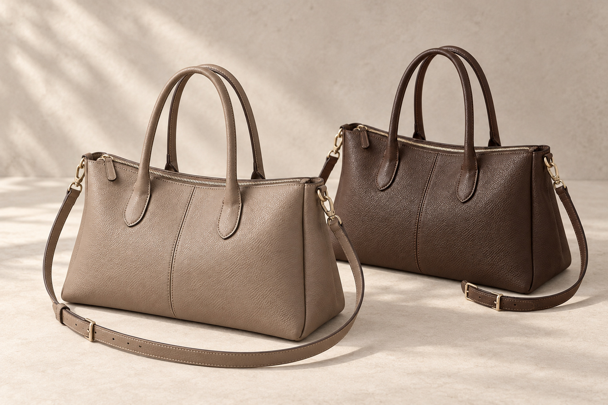
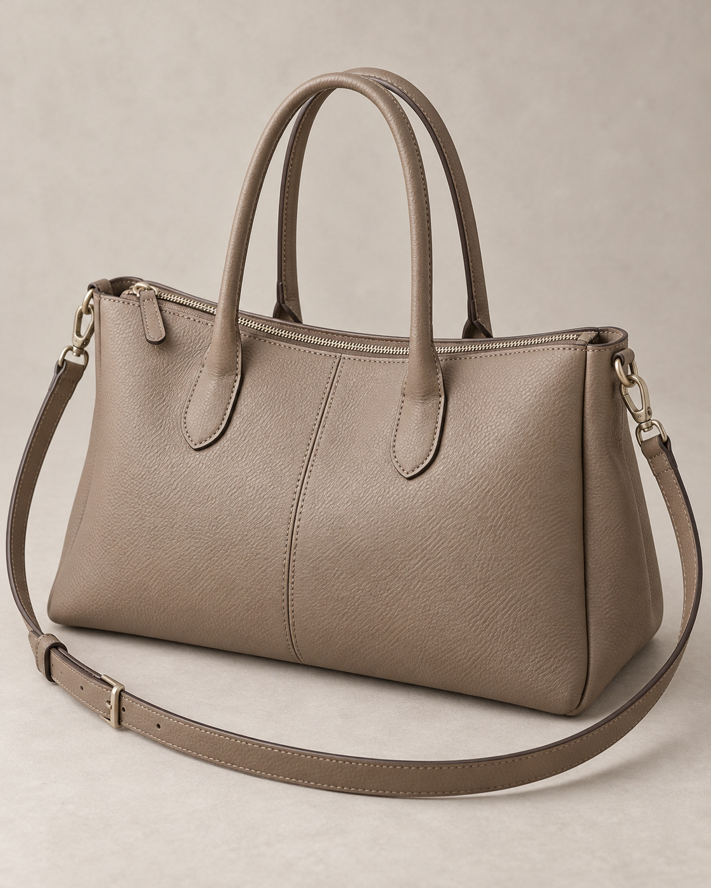
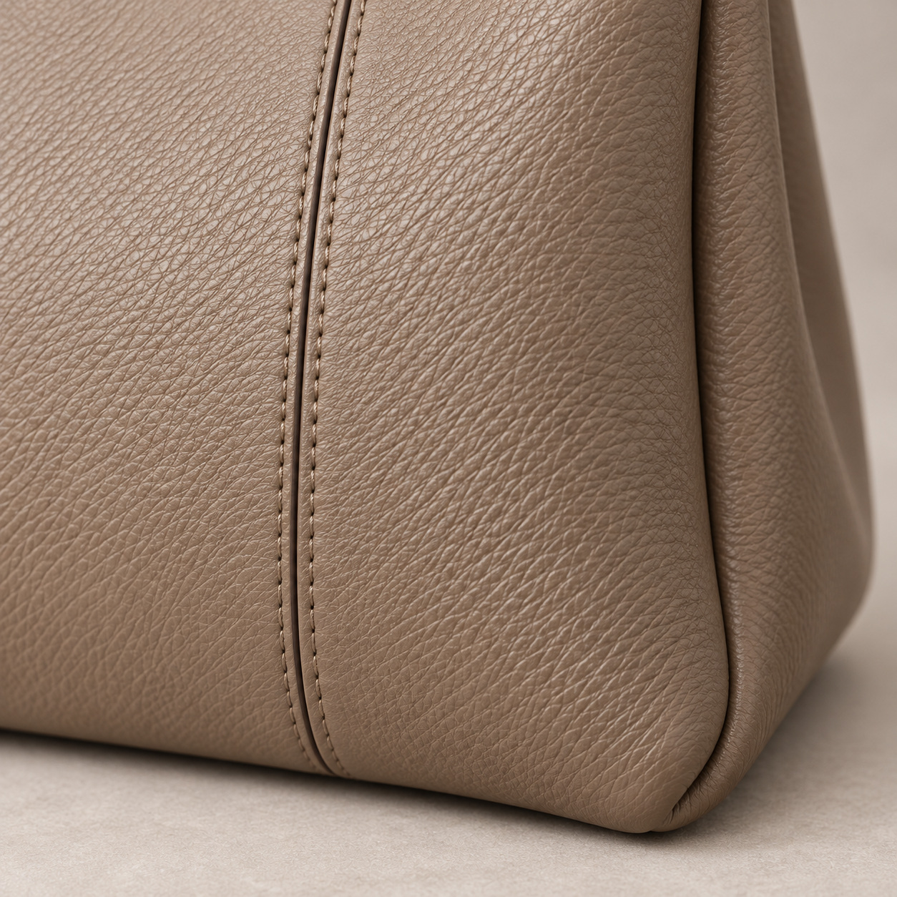
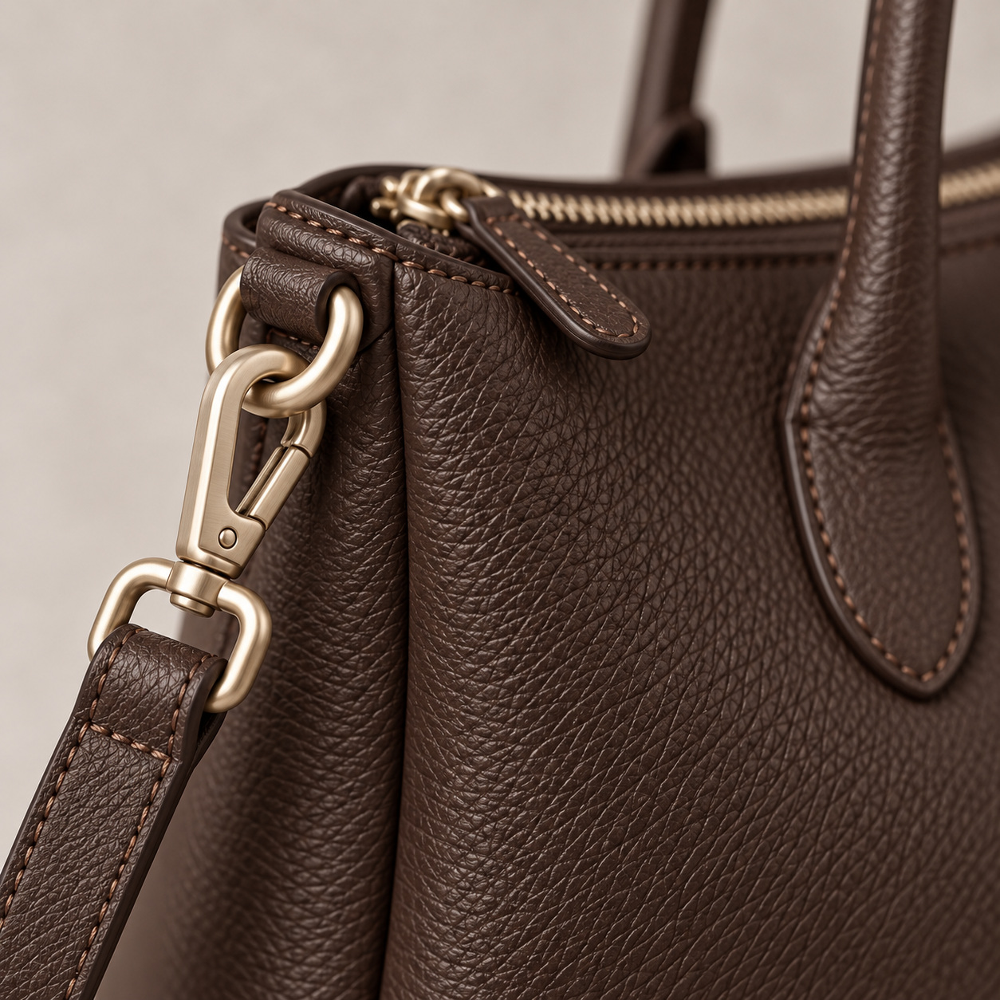
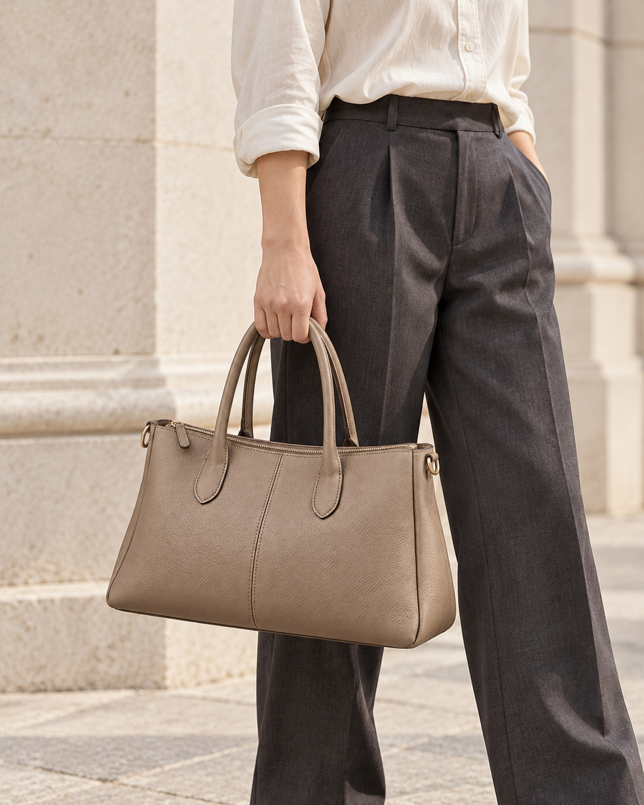
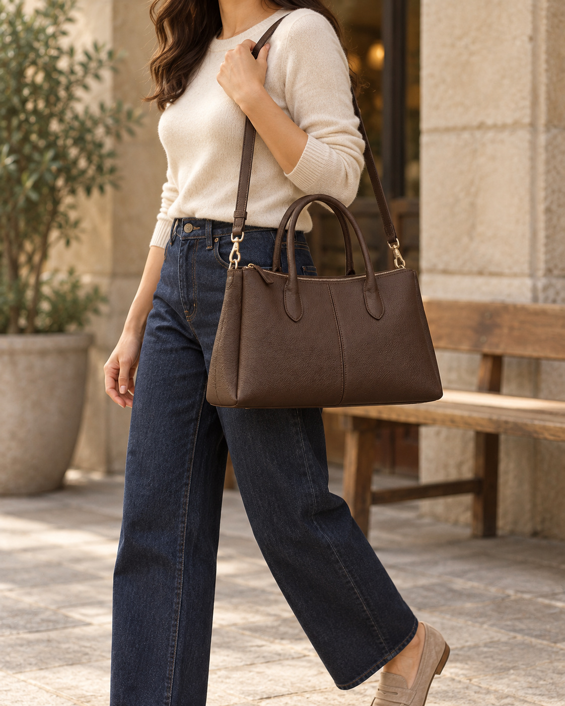
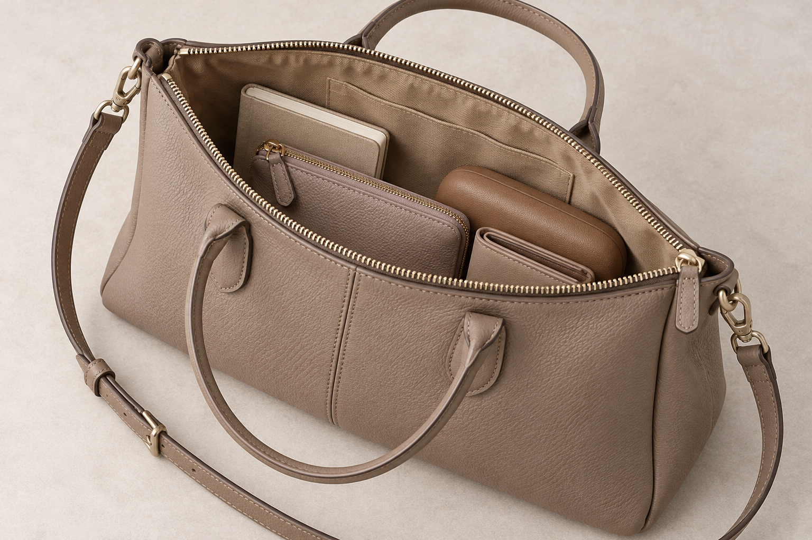

MOTIF패션·잡화 / 포트폴리오 샘플
데일리 투웨이 토트백
취향은 단정하게.
하루는 여유롭게.
매일의 옷차림을 자연스럽게 잇는 실루엣.
토프와 에스프레소, 당신의 일상에 가까운 색을 만나보세요.
디테일 살펴보기 ↘

부드러운 토프깊이 있는 에스프레소
절제된 실루엣토트 & 숄더두 가지 뉴트럴 컬러
매일 들고 싶은 이유
차려입은 아침부터,
힘을 뺀 주말까지.
예쁜 가방도 오늘의 옷과 어울리지 않으면
결국 손이 가는 건 따로 있으니까.
장식의 존재감보다 옷차림과의 조화를 먼저 생각했습니다. 부드럽게 이어지는 곡선과 차분한 두 가지 색. 셔츠와 슬랙스에도, 니트와 데님에도 무리 없이 스며드는 일상의 균형을 담았습니다.
01형태는 단정하게
가로로 흐르는 선과 둥근 모서리
02활용은 유연하게
손에 들거나 스트랩을 연결하거나
03색감은 깊이 있게
옷장의 기본색과 어울리는 두 톤
형태에서 시작되는 인상
각을 세우지 않아도,
인상은 또렷하게.
가로로 펼쳐지는 몸체에 둥근 모서리를 더해, 반듯함과 부드러움이 함께 느껴집니다. 전면의 세로 봉제선은 넓은 면을 차분하게 정리하고, 접힌 측면은 옆모습에도 입체감을 남깁니다.
과한 장식 없이도
옷차림에 중심을 잡아주는 형태.


멀리서는 담백하게.
가까이서는 섬세하게.
잔잔한 표면의 결이 빛을 받아 은은한 음영을 만듭니다. 바탕색과 가까운 스티치, 가장자리를 따라 이어지는 짙은 마감선. 눈에 먼저 띄는 장식 대신, 가까이에서 발견하는 디테일을 더했습니다.
결 · 선 · 마감세 가지 요소가 만드는 차분한 밀도
디테일 02 / 연결과 여밈
작은 빛 하나까지,
전체의 분위기에 맞게.
깊은 브라운 위에 샴페인 톤 연결 장식이 은은한 대비를 만듭니다. 스트랩을 연결하는 고리와 상단 지퍼까지 같은 분위기로 정리해, 필요한 기능이 별도의 장식처럼 튀지 않도록 했습니다.
- 연출에 맞춰 연결하는 탈부착 스트랩
- 입구를 따라 이어지는 지퍼 여밈
- 색감과 균형을 맞춘 작은 금속 디테일

손에 들면 단정하게.
어깨에 걸치면 자연스럽게.
약속이 있는 날의 또렷한 인상도, 움직임이 많은 날의 편안한 스타일도.
스트랩 하나로 오늘의 차림에 맞춰 연출해 보세요.

01 / 토트 연출손끝에서 완성되는 단정함
셔츠와 슬랙스의 정돈된 선에 둥근 핸들이 부드러운 여운을 더합니다.

02 / 숄더 연출일상에 가까워지는 자연스러움
니트와 데님에 깊은 브라운을 더해, 힘을 주지 않은 차림도 차분하게 마무리합니다.
착용 이미지는 스타일링 연출입니다. 실제 착용 위치는 체형과 스트랩 길이에 따라 달라집니다.
가방 안에도 나만의 순서
많이 넣는 것보다,
필요한 것을 찾기 쉽게.
노트와 지갑, 파우치와 안경 케이스.
자주 쓰는 소지품이 보이는 자리에 놓이면, 꺼내는 순간도 한결 단순해집니다.

입구는 넓게 바라보고지퍼를 열어 안쪽 구성을 한눈에 살펴보세요.
작은 것은 함께 모으고자잘한 소지품은 별도 파우치로 정리해 보세요.
오늘 필요한 만큼만여백을 남기면 소지품을 구분하기 좋습니다.
수납 연출 예시이며 소품은 구성품이 아닙니다. 실측 정보가 없는 콘셉트 샘플로, 특정 물품의 수납 가능 여부를 보장하지 않습니다.
색이 만드는 두 가지 분위기
같은 실루엣,
취향에 따라 다른 깊이.
색상을 선택해 제품의 분위기를 비교해 보세요.
토프 색상을 보고 있습니다.
COLOR 01부드러운 토프
밝은 옷차림에 스며드는
차분하고 유연한 인상.
회색과 베이지 사이의 따뜻한 색감. 아이보리·크림·그레이처럼 부드러운 기본색과 조화를 이루며, 옷차림 전체를 은은하게 이어줍니다.
- 잘 어울리는 차림
- 밝은 셔츠 · 뉴트럴 니트 · 차콜 슬랙스
- 이런 취향이라면
- 색 대비보다 자연스러운 톤의 연결을 좋아하는 분

COLOR 02깊이 있는 에스프레소
단정한 옷차림에 더하는
묵직하지 않은 존재감.
짙은 브라운이 밝은 상의와는 선명한 대비를, 네이비·블랙과는 깊은 조화를 만듭니다. 금속 장식의 은은한 빛이 어두운 색에 섬세한 표정을 더합니다.
- 잘 어울리는 차림
- 에크루 니트 · 인디고 데님 · 짙은 재킷
- 이런 취향이라면
- 가방 하나로 옷차림에 중심을 더하고 싶은 분
색상은 화면 설정과 조명에 따라 다르게 보일 수 있습니다. 두 색상 모두 포트폴리오용 제품 콘셉트입니다.
내 옷장에서 고르는 방법
좋아하는 색보다,
자주 입는 옷을 먼저.
평소 옷차림추천하는 분위기선택할 색
아이보리 · 베이지 · 밝은 그레이색이 자연스럽게 이어지는 부드러운 조화토프
크림 · 데님 · 네이비 · 블랙밝고 어두운 톤 사이의 깊이 있는 균형에스프레소
부드러운 연결이 좋다면 토프.
단정한 대비가 좋다면 에스프레소.
이런 일상에 권합니다
하나의 가방을,
여러 날의 취향으로.
- 01
출근복과 주말 옷 사이를 오가는 분
차림마다 가방을 바꾸기보다, 서로 다른 분위기에 연결되는 단정한 형태를 찾는다면.
- 02
큰 로고보다 작은 디테일을 보는 분
금속 장식의 크기, 스티치의 색, 옆면의 접힘처럼 가까이에서 느껴지는 균형을 좋아한다면.
- 03
그날의 일정에 따라 연출을 바꾸는 분
토트의 정돈된 인상과 숄더의 자연스러운 인상을 하나의 실루엣으로 즐기고 싶다면.
마지막으로 살펴볼 세 가지
사진 속 예쁨을 넘어,
내 하루와 맞는지.
매일 들 가방이라면, 마음에 드는 장면만큼 실제 사용 방식도 중요합니다. 옷차림과 소지품, 평소 드는 방법을 함께 떠올려 보세요.
- 옷장의 기본색과 어울리나요?
가장 자주 입는 상의와 겉옷에 두 색상을 대입해 보세요.
- 평소 드는 방법에 맞나요?
손에 드는 날과 어깨에 메는 날, 어느 쪽이 더 많은지 생각해 보세요.
- 꼭 넣어야 할 물건은 무엇인가요?
실제 상품을 선택할 때는 가방의 내측 실측과 물품 크기를 비교하세요.
좋아하는 형태를 오래 바라보도록
사용 뒤에도,
잠깐의 정돈을.
01 / 비우기소지품은 꺼내두세요.
사용하지 않을 때는 내용물을 비우고 스트랩을 자연스럽게 정리해 보세요.
02 / 보관하기열과 습기를 피하세요.
직사광선과 습한 곳을 피해 보관하고, 강한 압력으로 형태가 눌리지 않게 해주세요.
03 / 확인하기관리는 소재에 맞게.
물 세척이나 전용 클리너 사용 전에는 실제 제품의 소재별 관리 안내를 먼저 확인하세요.
선택 전 궁금한 이야기
자주 묻는 질문
토트와 숄더, 어떻게 바꾸나요?
양쪽 고리에 긴 스트랩을 연결하면 숄더로, 스트랩을 분리하면 손잡이를 활용한 토트로 연출하는 콘셉트입니다. 착용 위치는 실제 스트랩 길이와 체형에 따라 달라집니다.
토프와 에스프레소 중 어떤 색을 고르면 좋을까요?
밝고 부드러운 옷차림을 즐긴다면 토프를, 데님이나 짙은 재킷에 깊이 있는 색을 더하고 싶다면 에스프레소를 권합니다. 위 색상 선택 영역에서 같은 형태의 두 색상을 비교해 보세요.
노트북이나 태블릿도 넣을 수 있나요?
이 페이지는 실측을 확정하지 않은 포트폴리오 샘플이므로 특정 기기 수납을 보장하지 않습니다. 실제 제품을 구매할 때는 가방 내부와 기기의 가로·세로·두께를 함께 확인해 주세요.
가방의 소재와 무게는 어떻게 되나요?
표면의 결, 봉제와 색상은 디자인 콘셉트로 표현했습니다. 실제 원단·가죽 종류나 등급, 무게, 원산지와 성능 시험 정보는 정해지지 않았으며 이 사진만으로 보증하지 않습니다.
이 제품을 실제로 구매할 수 있나요?
실제 판매 상품이 아닌 MOTIF의 자체 제작 포트폴리오 샘플입니다. 제품 및 착용·수납 사진은 연출 이미지이며, 구매 링크나 실제 고객 후기는 제공하지 않습니다.
MOTIF 포트폴리오 샘플제품·사진·문구·레이아웃은 상세페이지 제작 역량을 보여주기 위한 자체 콘셉트입니다. 실제 상품의 소재·규격·성능·판매 사실을 의미하지 않습니다.
데일리 투웨이 토트백
옷차림은 달라도,
취향은 자연스럽게 이어지도록.
부드러운 토프와 깊이 있는 에스프레소.
매일의 나에게 가까운 분위기를 골라보세요.
두 색상 다시 비교하기 ↑